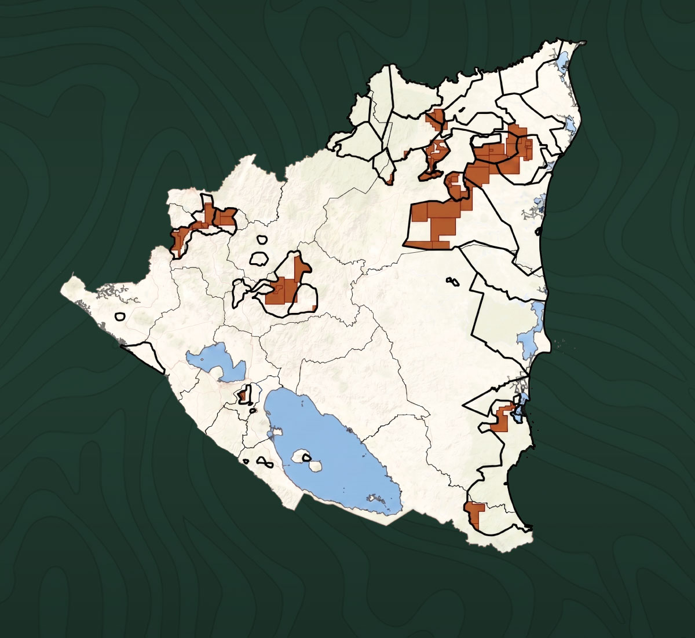

Atlas
Concesiones mineras en territorios indígenas y afrodescendientes de Nicaragua

Este atlas documenta las concesiones mineras otorgadas por el Estado de Nicaragua en territorios indígenas y afrodescendientes, identificando el origen del capital de las empresas concesionarias y analizando su impacto sobre la red hídrica de cada territorio, con un corte actualizado a marzo de 2026.
Presentación
El presente Atlas es un esfuerzo de Fundación del Río para ayudar a comprender gráficamente la dimensión de la expansión minera promovida por el régimen de Daniel Ortega y Rosario Murillo sobre los territorios indígenas y afrodescendientes de Nicaragua. Los mapas que integran esta publicación no son únicamente instrumentos técnicos de ubicación geográfica; son también una herramienta de memoria, denuncia y defensa de los territorios indígenas y afrodescendientes que hoy enfrentan una presión creciente derivada del otorgamiento de concesiones mineras sin respeto a sus derechos colectivos, a sus formas de vida, a sus sistemas de gobernanza comunitaria y al principio de Consulta Libre, Previa e Informada.
El análisis contenido en el Atlas identifica 18 territorios afectados por concesiones mineras, con una superficie total concesionada de 681,574.73 hectáreas dentro de sus límites territoriales. Esta situación adquiere mayor gravedad cuando se observa el nivel de presión sobre territorios específicos. En Tuahka Takaln Balna, el área concesionada representa el 88.64% del territorio; en Tasba Pri Matriz Indígena, el 83.77% y en Mayangna Sauni Arungka "Matunbak", el 63.79%.
La situación no es distinta en la zona central del país, donde el 56.37% del territorio Chorotega–Norte y el 50.05% del territorio Matagalpa están comprendidos dentro de concesiones mineras.